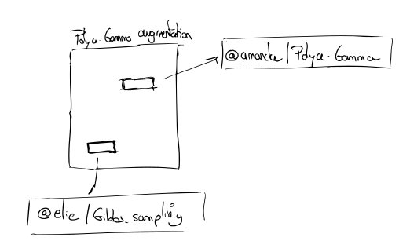

Reference other people's ideas
Collaboration on the Internet is difficult because the lifecycle of ideas is contingent to where they were created, where they are currently stored, and because the documents in which they are stored can evolve over time. Fear of alteration (or disappearance) of the linked content, and thus of context, leads creators to copy others' content. I have certainly done that here.
Internet users (authors, readers) should not have to care about where ideas are published and located, when they were published and amended. We should instead have an abstraction on top of the existing infrastructures that allows ideas to live independently from their local materical conditions, to be replicated and linked to seamlessly.
Let us consider a simple example, and imagine that my Polya-Gamma augmentation links to Amanda's "polya\gamma" note and Elie's "gibbs\sampling" note:

As the author I would like some kind of guarantees from my knowledge system.
Protecting knowledge against deletion
The problem If Elie deletes "gibbs\sampling" from the server where it was stored, the HTTP link becomes stale, this knowledge is inaccessible. Someone consulting my notes will never know what I was referring to; worse my note might loose context, and the meaning will be altered. As a matter of fact 1 in every 200 links die every week.
The cope The fear of this happening leads people to write self-contained knowledge repositories. Great content gets copied when it could just get referenced1. I have noticed, without being able to offer a quantitative proof of this (yet), that digital gardens are prone to this knowledge accretion phenomenon; they tend to be more self-contained as time goes, instead of being more connected to the outside.
The solution Whatever file system hosts my notes should be responsible for making a copy of the target note. This way notes never really disappear. Notes that are referred to often are very unlikely to disappear. This makes knowledge very resilient.
Managing knowldege updates
The problem If Amanda updates "polya\gamma", my link might loose meaning without me knowing. Visitors may now be sent to a note that has very little to do with the one I linked to originally. Ideas can move under my not without me being aware.
The cope The fear of this happening leads to (1) people copying content (2) very strict revision processes for documents (3) enforced immutability. (3) is what happens to scientific literature: the results are included in an article that is set in stone. Lineage of ideas is thus hard to establish.
The solution Notes should be versioned. This is problematic for documents that are not text-based. When users follow my link, they arrive on the note as it was when I originally established the link. A good client would notify the visitor if the note has changed.
Managing migrations
The problem If Amanda moves "polya\gamma" from SuperWebsiteHosting to GigaSpeedHosting, the link becomes stale although the content hasn't changed. But Internet should not break because content has been moved around.
The solution The combination Author + Note gets a unique identifier on the network, and it does not matter on what server it is stored exactly.
References
- Lots of Copies Keep Stuff Safe
- "Link Rot" (Wikipedia article)
- The Interplanetary File System peer-to-peer protocol appears to be suited for this;
- Noosphere is a work-in-progress protocol that articulates similar ideas in its design document.
Links to this note
Footnotes:
Content also gets copied because of the discovery problem: people just don't know that this content exists. In the same way that Google (partially) solved the discovery problem in an HTTP world, any new protocol will need one or several discovery apps.